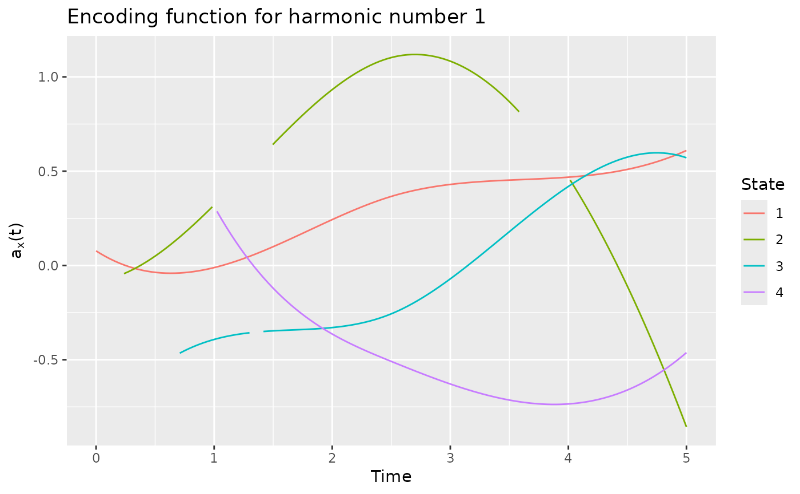

cfda provides functions for the analysis of categorical functional data.
The main contribution is the computation of an optimal encoding (real functional variable) of each state of the categorical functional data.
This can be done using the compute_optimal_encoding function that takes in arguments the data in a specific format and
a basis of functions created using the fda package (cf. create.basis). The output can be analysed with summary.fmca,
plot.fmca, get_encoding, plotEigenvalues and plotComponent.
Moreover, cfda contains functions to visualize and compute some statistics about categorical functional data.
A summary of the dataset is available with summary_cfd.
plotData shows a graphical representation of the dataset.
Basic statistics can be computed: the number of jumps (compute_number_jumps), the duration (compute_duration),
the time spent in each state (compute_time_spent), the probability to be in each state at any given time (estimate_pt),
the transition table (statetable).
The parameters of a Markov process can be estimated using estimate_Markov function.
In order to test the different functions, a real dataset is provided (biofam2) as well as two functions for generating data:
(generate_Markov and generate_2State).
Details
See the vignette for a detailed example and mathematical background:
RShowDoc("cfda", package = "cfda")
References
Deville J.C. (1982) Analyse de données chronologiques qualitatives : comment analyser des calendriers ?, Annales de l'INSEE, No 45, p. 45-104.
Deville J.C. et Saporta G. (1980) Analyse harmonique qualitative, DIDAY et al. (editors), Data Analysis and Informatics, North Holland, p. 375-389.
Saporta G. (1981) Méthodes exploratoires d'analyse de données temporelles, Cahiers du B.U.R.O, Université Pierre et Marie Curie, 37-38, Paris.
See also
Examples
# Simulate the Jukes-Cantor model of nucleotide replacement K <- 4 Tmax <- 6 PJK <- matrix(1/3, nrow = K, ncol = K) - diag(rep(1/3, K)) lambda_PJK <- c(1, 1, 1, 1) d_JK <- generate_Markov(n = 10, K = K, P = PJK, lambda = lambda_PJK, Tmax = Tmax) d_JK2 <- cut_data(d_JK, Tmax) # create basis object m <- 6 b <- create.bspline.basis(c(0, Tmax), nbasis = m, norder = 4) # compute encoding encoding <- compute_optimal_encoding(d_JK2, b, computeCI = FALSE, nCores = 1)#> ######### Compute encoding ######### #> Number of individuals: 10 #> Number of states: 4 #> Basis type: bspline #> Number of basis functions: 6 #> Number of cores: 1 #> ---- Compute V matrix: #> #> DONE in 0.62s #> ---- Compute U matrix: #> #> DONE in 3.53s #> ---- Compute encoding: #> DONE in 0.02s #> Run Time: 4.19s#> #### FMCA #> #> ## Data #> Number of individuals: 10 #> Number of states: 4 #> Time Range: 0 to 6 #> States: 1 2 3 4 #> #> ## Basis #> Type: bspline #> Number of basis functions: 6 #> #> ## Outputs #> Eigenvalues: #> 4.637785 2.816563 2.793398 1.056381 0.9828662 0.625612 #> #> Explained variance: #> 0.334 0.536 0.737 0.813 0.884 0.929 #> #> Optimal encoding: #> 1 2 3 4 #> [1,] -0.07784014 0.9022159 0.24355469 0.9472357 #> [2,] -0.45074685 -0.8006644 0.60461057 0.4712409 #> [3,] -0.19825488 0.5339617 -1.26237349 0.7857174 #> [4,] -0.30988197 -0.8813381 -0.09140095 0.5483527 #> [5,] 0.69532124 -0.2916668 0.28642504 0.1939174 #> [6,] 0.38607934 -0.5892383 0.09890342 -0.1218741 #> #> Principal components: #> [,1] [,2] [,3] [,4] [,5] [,6] #> 1 0.1774185 -1.6596926 0.1665942 1.0931164 0.70077949 -1.02514668 #> 2 2.8887787 1.6241755 -0.5820663 0.4830865 -1.06206713 0.62807799 #> 3 -2.3506706 0.1748007 -2.3093265 -0.1257663 -0.17887866 -0.05405512 #> 4 -0.8689081 -0.2386552 2.1940062 -1.1036073 -1.32461857 -1.27120061 #> 5 -1.4634015 2.9280554 2.7585150 0.5531948 0.94109986 0.43530423 #> 6 -1.4605043 -1.2959339 -0.3862482 1.8745450 -0.08968941 0.17340474 #> #> Total elapsed time: 4.19 s#> Warning: Removed 5 row(s) containing missing values (geom_path).